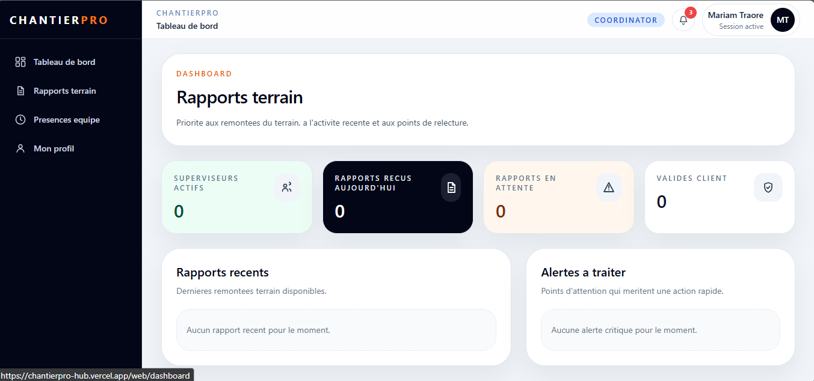
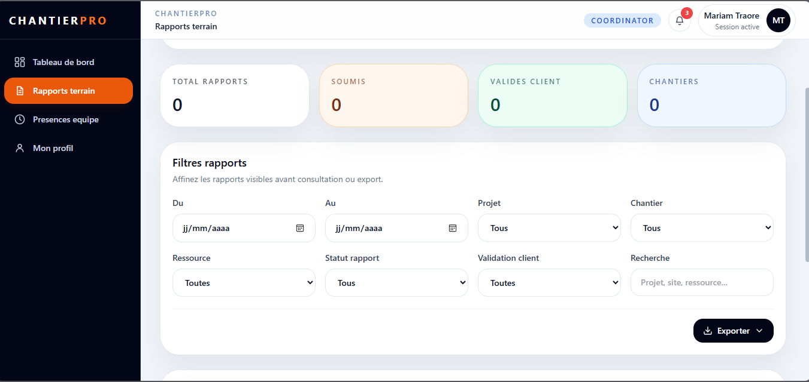
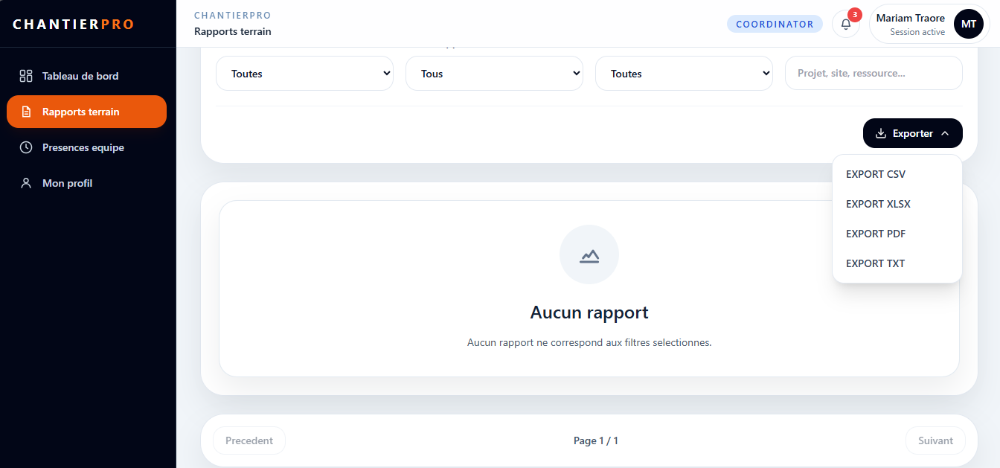
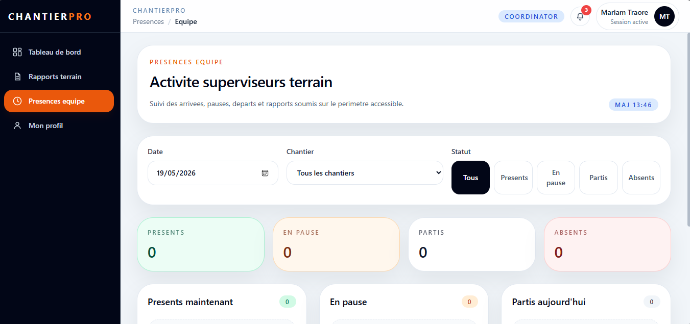
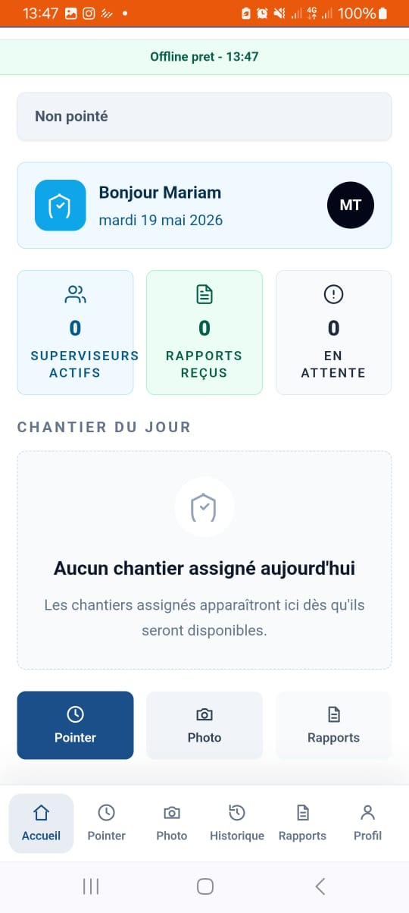
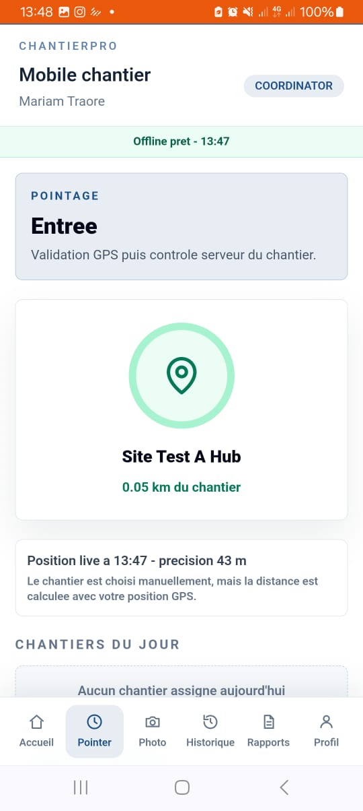
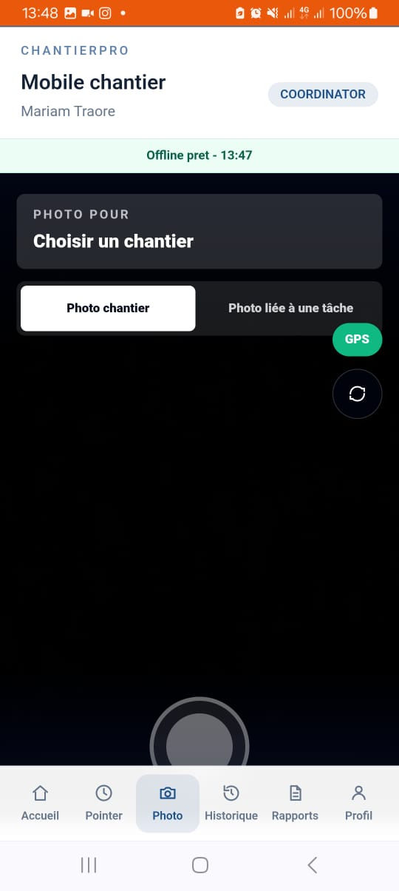
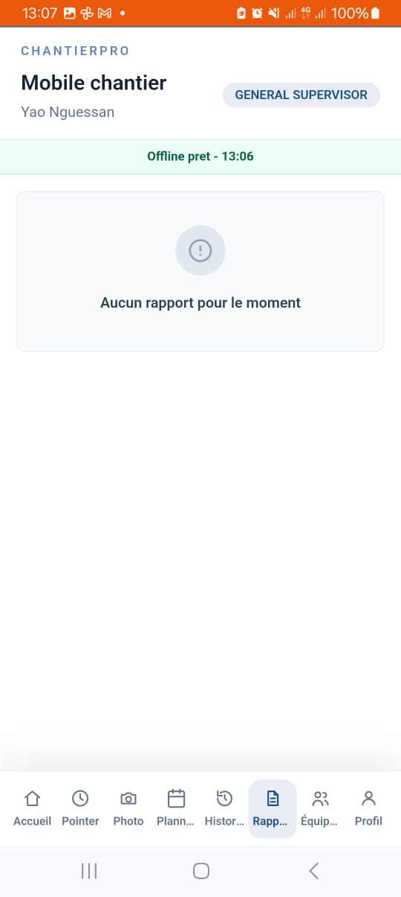

Objectif du role
Le coordinateur suit les rapports terrain, verifie les informations, telecharge les documents autorises et peut aussi etre assigne comme ressource terrain sur un chantier.
Le coordinateur suit les rapports terrain, verifie les informations, telecharge les documents autorises et peut aussi etre assigne comme ressource terrain sur un chantier.
Web : Tableau de bord, Rapports terrain, Presences equipe et Profil.
Mobile : Accueil, chantiers du jour, Pointer, Photo, Historique, Rapports, Sync/offline et Profil si le coordinateur est utilise sur le terrain.

assets/coord-web-dashboard.png
assets/coord-web-rapports.png
assets/coord-web-telechargement.png
assets/coord-web-presences.png
assets/coord-mobile-accueil.jpeg
assets/coord-mobile-pointage.jpeg
assets/coord-mobile-photo.jpeg
assets/coord-mobile-rapports.jpeg